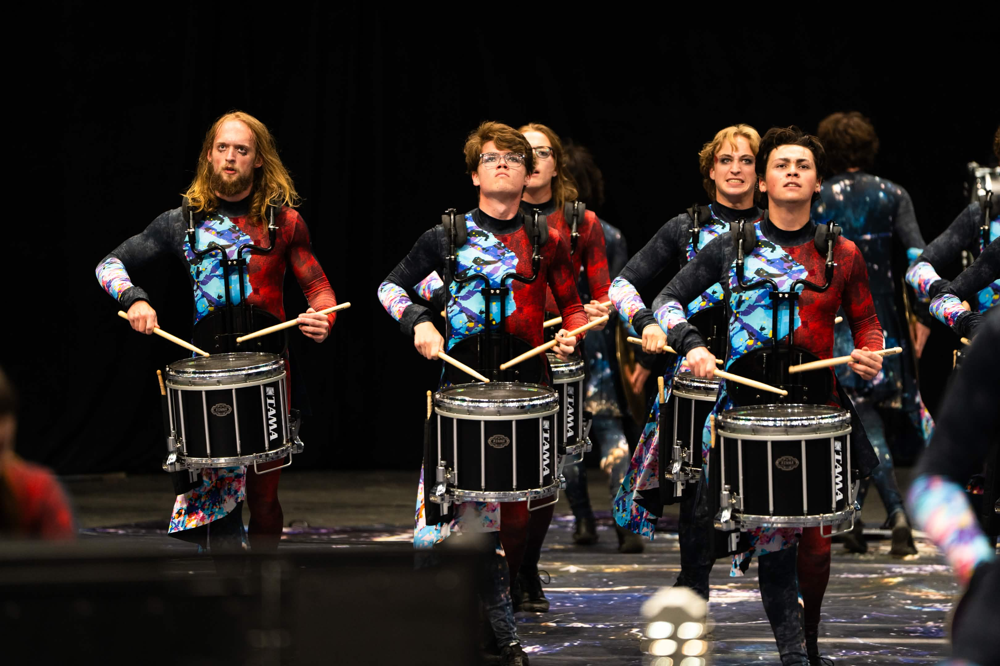
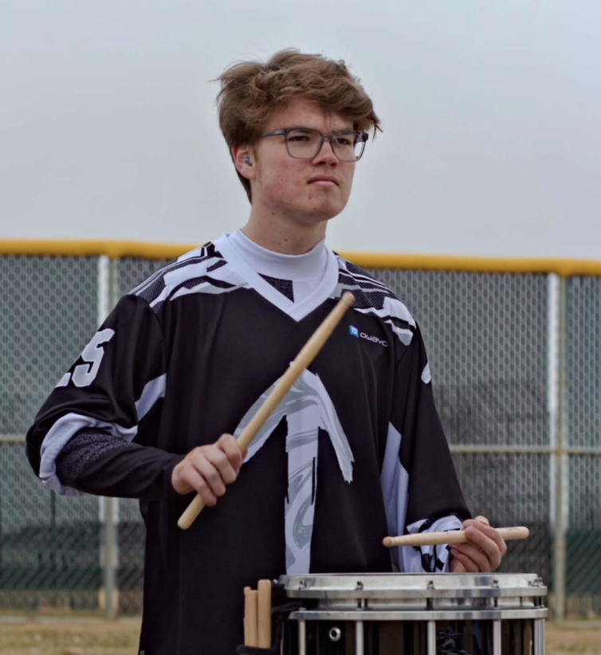

I utilized my passion for music through extensive time in extracurriculars throughout college. Led team of 9 other snare drummers in creating accurate and entertaining performances for local and national communities. Served as function of time for overall 250-person band. Provided structured feedback to improve accuracy and execution. Demonstrated strong verbal communication and peer mentorship.

Member of Rise Percussion for 3 years, 2024-2026. Participated in a world class percussion ensemble that competes in the national circuit in the highest possible division. Honed skills of teamwork, dedication, perseverance, and hard work to the highest degree in order to hone one 7 minute product. Because of long tenure, began to mentor newer members in recent times in an unofficial leadership role.

Alternate area of study in Music Technology– completed music technology certificate and completed additional class here at CU. Took 6 different music technology classes to hone skills in music production, recording, and audio engineering. Valuable side skills allow me to find my own niche in the computer science world honing my existing unique music skills.